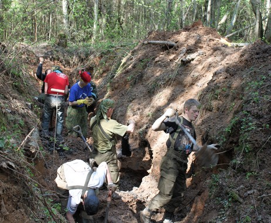
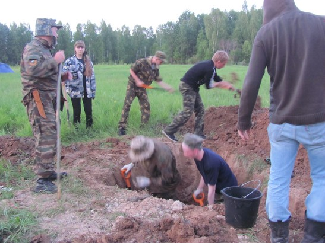
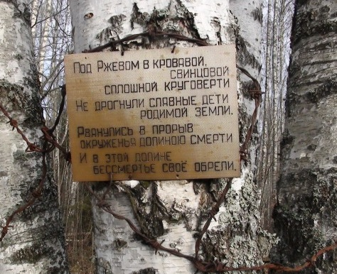

| Краткий отчёт о работе НИВПЦ «Подвиг» и проведении «Вахт Памяти»
в Тверской области за 2011 год поисковыми отрядами
НИВПЦ «Подвиг».
- Общее количество поисковых отрядов работавших в Тверской области (зарегистрированных в ВПЦ «Подвиг»): 60
- Количество поисковых отрядов из г.Твери и Тверской области: 36
- На территории Тверской области по приглашению и
согласованию с центром «Подвиг», работали
поисковых отрядов из Регионов РФ. 24
- Всего найдено в Тверской области, останков воинов РККА: 3052
- Захоронено в братские могилы: 2937
- Найдено медальонов: 204
- Участвовало поисковиков в Вахте Памяти более 1000
- Проведено перезахоронений на территории Тверской области 13
- Совместно с ФСБ и УВД Тверской области были пресечены незаконные работы поисковых формирований в боевых районах Тверской области.
- На основании представленных центром «Подвиг» материалов и экспонатов в музее Калининского фронта на постоянной основе находятся стенды по поисковому движению в Тверской области.
- Результаты поисковых работ постоянно освещались в электронных и печатных средствах массовой информации Тверской области и России, а также в прямом эфире и телерепортажах ТНТ, Пилот, Звезда.
- Центр «Подвиг» тесно сотрудничает с поисково – спасательной службой и специальной группой разминирования Тверской области. По нашим заявкам проведено много уничтожений боеприпасов разного калибра.
- Поисковый центр тесно работает по розыску родственников погибших и мест захоронений воинов РККА с Фондом «Жить и Помнить». По итогам совместной работы и по письменным заявкам на розыск уже найдены десятки родственников погибших и места разыскиваемых захоронений не только в России, но и в ближнем и дальнем зарубежье.
- За весь период работы ВПЦ «Подвиг» с 1988 по октябрь 2011 года было найдено и перезахоронено в братские могилы более 43000 останков солдат РККА. Установлено более 4600 имён без вести пропавших, у многих найдены родственники.
- На данный момент готовится тиражирование поискового видеофильма «Освобождение Калинина».
- Одной из основных своих задач мы считаем воспитание у населения уважения к памяти павших в годы войны.
- Из года в год повышается эффективность поисковых работ. Ежегодно НИВПЦ «Подвиг» пополняет свои ряды. На сегодняшний день в нашем составе зарегистрировано 35 поисковых отряда из г. Твери и Тверской области и 1 отряд (г. Ноябрьск) из Ямало - Ненецкого автономного округа ( в 2004 году было всего16 отрядов). Работа центра «Подвиг» строится в строгом соответствии с российским законодательством и нормативными актами Тверской области.
- В поисковых работах на территории Тверской области каждый год участвуют до 70 поисковых отрядов из Тверской области и из других Регионов РФ в количестве более 1000 человек. Проводится не менее 100 выездов на «Вахты Памяти».
- С 2011 года поисковый Центр и поисковые отряды взяли на себя обязательство по мере возможности обеспечивать экспозиции школьных музеев боевой славы
- Поисковая работа в Тверской области в настоящее время находится на хорошем уровне по всем направлениям, реально способствует нравственному и патриотическому воспитанию нашего подрастающего поколения.
- В 2011 году большую помощь в законодательном и материально-техническом оснащении поисковых отрядов оказали Администрации Тверской области и г. Твери. Так же очень способствовало плодотворной работе по увековечению Памяти взаимопонимание и содействие нам со стороны Законодательного Собрания Тверской области, Комитета по делам молодёжи и ГУ «Центр патриотического воспитания Тверской области».
- На высоком уровне были проведены такие мероприятия как:
- участие в праздновании Дня Победы (г. Тверь) с выставкой поисковых находок и обучением молодежи методике поисковой работы;
- фестиваль патриотических организаций «Тверская Весна 2011» (г.Тверь, карьер Константиновка);
- Всероссийская акция «1й в Армии».
Председатель правления НИВПЦ «Подвиг» Титков С.В. |